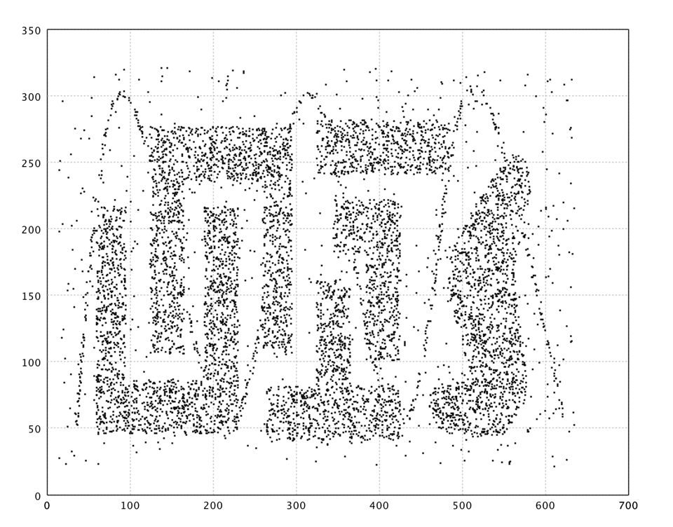
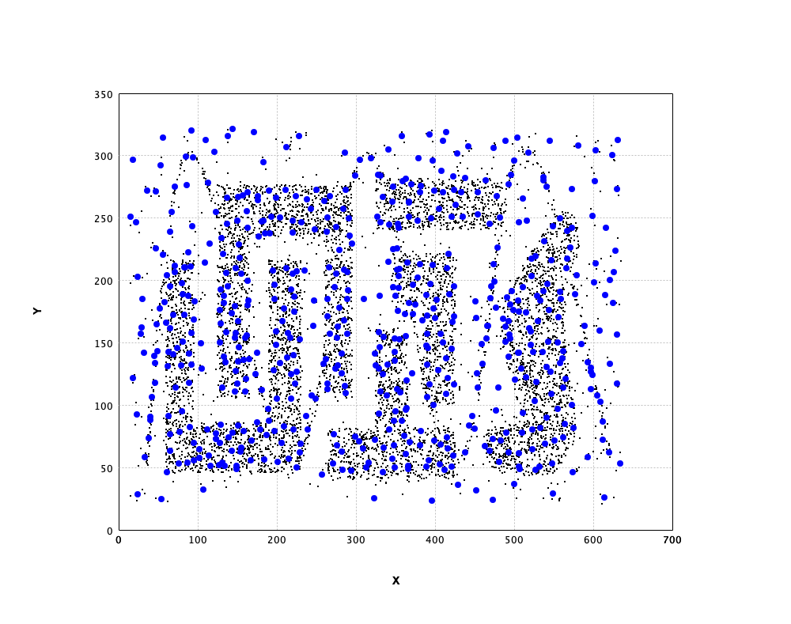
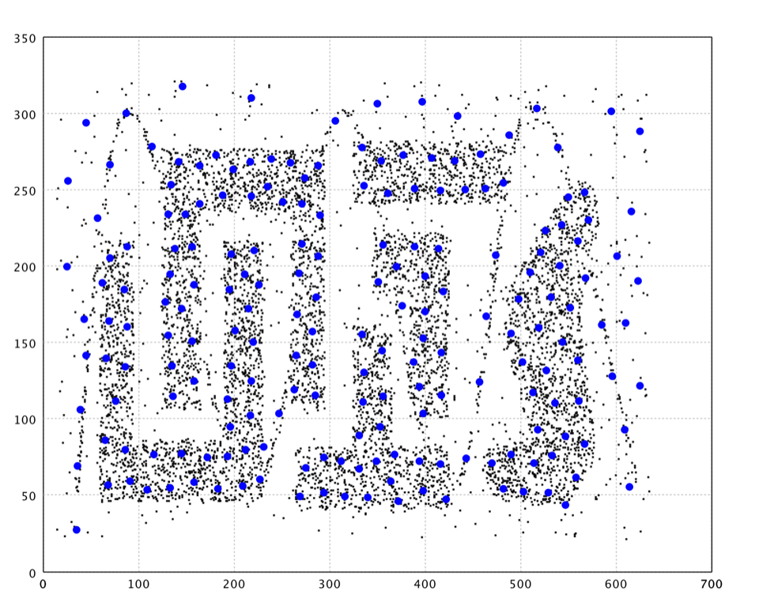
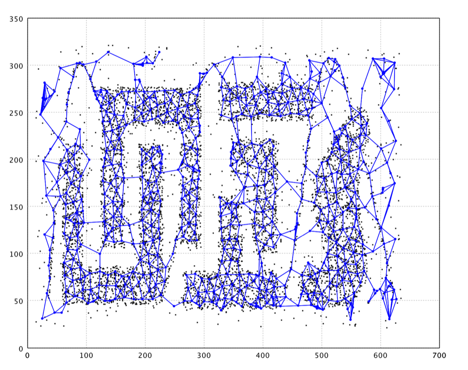
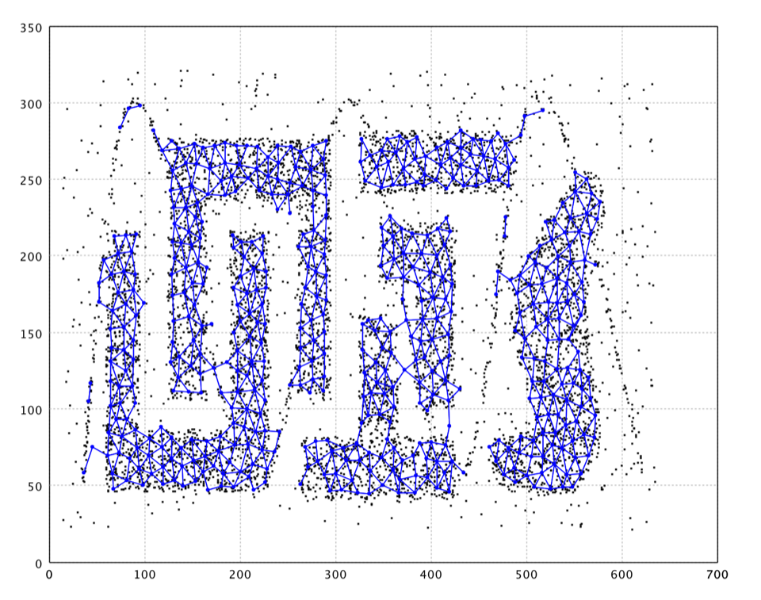
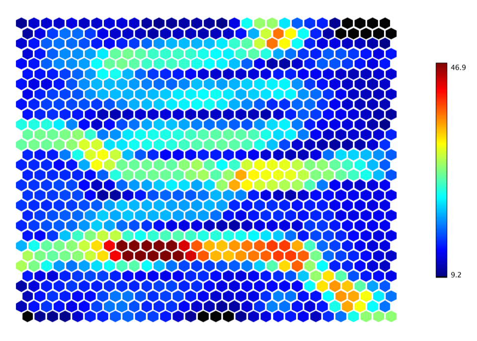
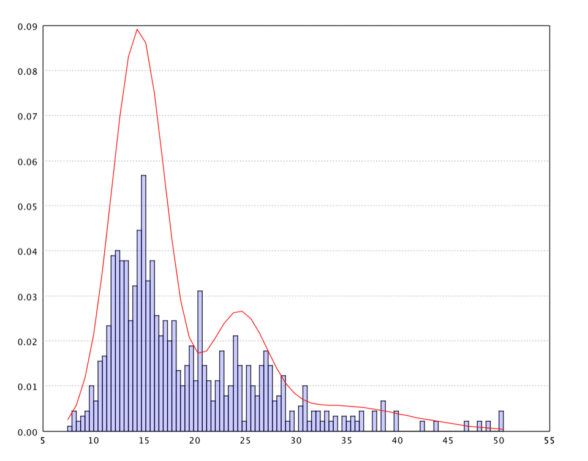
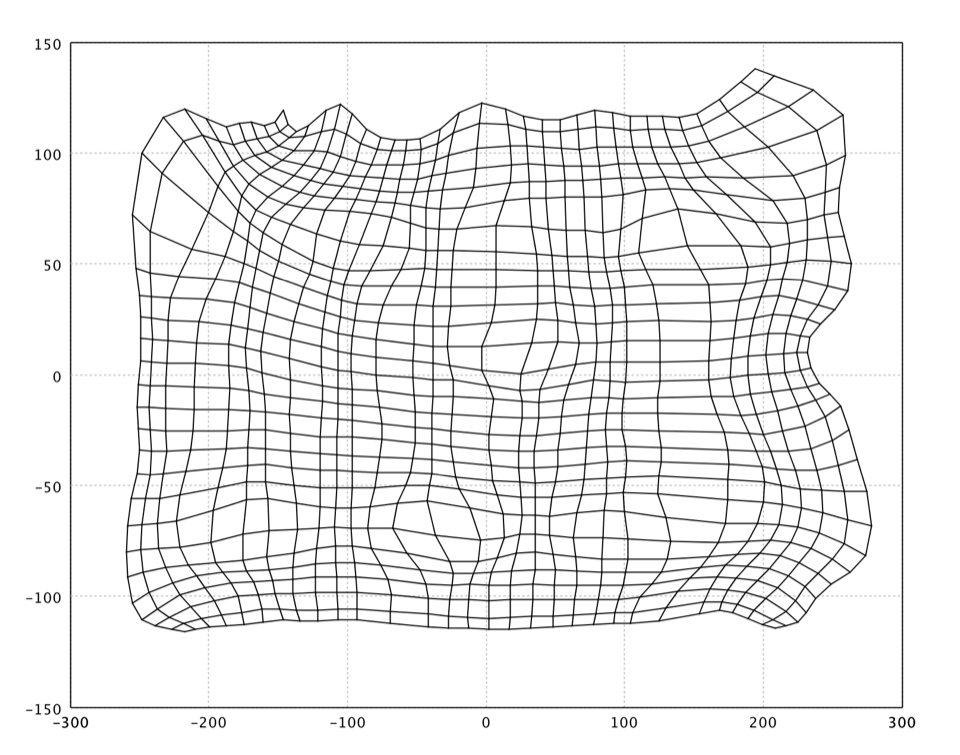

Vector Quantization
Overview
Vector quantization (VQ) is a lossy compression technique that maps an input vector to the nearest element of a finite set of code vectors (also called prototypes or centroids). Each algorithm in smile.vq learns these prototypes from data through online, competitive learning: prototypes compete for each incoming signal, and the winner (or winners) are updated to better represent that signal.
SMILE’s VQ algorithms all implement the VectorQuantizer interface and support incremental learning via update(double[] x). That makes them suitable for streaming data, large datasets that do not fit in memory, or distributions that may shift over time.
The package contains five quantizer implementations:
| Class | Topology | Fixed size? | Key strength |
|---|---|---|---|
BIRCH | CF-tree (hierarchical) | No | Fast, memory-bounded, handles very large datasets |
NeuralGas | None (soft competition) | Yes | Robust convergence, good coverage |
GrowingNeuralGas | Graph (dynamic) | No | Adapts topology and size to data |
NeuralMap | Graph (dynamic, radius-gated) | No | Memory-efficient, noise-resistant |
SOM | 2-D rectangular lattice | Yes | Topology-preserving, visual interpretation |
Several playgrounds on this page use the Chameleon t4.8k dataset — a well-known 2-D spatial benchmark for data mining and clustering algorithms. It belongs to a suite of synthetic packages associated with the CHAMELEON clustering algorithm (George Karypis et al.) and consists of 8,000 points in a 2-dimensional space (8000 × 2).
The data contain seven distinct, highly irregular density clusters with varying shapes (curves, nested structures) and sizes, plus a high degree of background noise. That mix stresses how robustly an algorithm can filter outliers and recover cluster boundaries. Researchers often bench spatial and density-based models on t4.8k together with sibling sets t5.8k, t7.10k, and t8.8k.

The VectorQuantizer Interface
Every algorithm implements VectorQuantizer, which extends Serializable:
public interface VectorQuantizer extends Serializable {
int OUTLIER = Integer.MAX_VALUE;
void update(double[] x);
double[] quantize(double[] x);
}All implementations are serializable, so a trained model can be saved and restored with standard Java object streams.
BIRCH — CF-Tree Quantizer
BIRCH (Balanced Iterative Reducing and Clustering using Hierarchies) builds a CF-tree — a height-balanced tree of Clustering Features (CF). Each CF is a compact statistical summary (N, LS, SS): the point count, linear sum, and square sum. From these three statistics the centroid and radius of a sub-cluster can be computed exactly and cheaply.
When a new point arrives, it is absorbed into the closest leaf CF if the resulting radius stays within the threshold T; otherwise a new CF is created. Leaves that exceed capacity L are split; internal nodes that exceed branching factor B are likewise split. quantize descends the tree to the nearest leaf CF and returns its centroid.
Construction
The constructor is BIRCH(int d, int B, int L, double T). T is the most important parameter — calibrate it from pairwise distances so it matches expected intra-cluster spread.
Usage
import smile.datasets.GaussianMixture;
import smile.math.MathEx;
import smile.vq.BIRCH;
MathEx.setSeed(19650218);
double[][] x = GaussianMixture.generate().x();
BIRCH birch = new BIRCH(x[0].length, 5, 5, 1.0);
for (double[] xi : x) {
birch.update(xi);
}
double[] prototype = birch.quantize(x[0]);
double[][] centroids = birch.centroids();
System.out.println(centroids.length);
System.out.println(prototype.length);
(leaf centroid count)
(dimensionality)
import smile.datasets.GaussianMixture
import smile.math.MathEx
import smile.vq.BIRCH
MathEx.setSeed(19650218)
val x = GaussianMixture.generate.x
val birch = new BIRCH(x(0).length, 5, 5, 1.0)
x.foreach(birch.update)
val prototype = birch.quantize(x(0))
val centroids = birch.centroids
println(centroids.length)
println(prototype.length)
(leaf centroid count)
(dimensionality)
import smile.datasets.GaussianMixture
import smile.math.MathEx
import smile.vq.BIRCH
MathEx.setSeed(19650218)
val x = GaussianMixture.generate().x()
val birch = BIRCH(x[0].size, 5, 5, 1.0)
for (xi in x) birch.update(xi)
val prototype = birch.quantize(x[0])
val centroids = birch.centroids()
println(centroids.size)
println(prototype.size)
(leaf centroid count)
(dimensionality)
centroids() returns the centroid of every CF at the leaf level. Feed these into hierarchical clustering (e.g. HierarchicalClustering) for phase 2 of the original BIRCH pipeline.
Key properties: single-pass construction, memory-bounded tree depth controlled by T/B/L, and O(log n) insertions. BIRCH’s quantize returns a new array computed from CF statistics, so it is safe to modify.

Neural Gas
Neural Gas (Martinetz & Schulten) uses soft competition: for every input x, all neurons are ranked by distance and updated, with adaptation strength decaying exponentially with rank. The closest neuron (rank 0) moves the most. A competitive Hebbian edge is also drawn between the best-matching unit (BMU) and the second-best; old edges can be pruned via network().
The adaptation rule for rank k at iteration t is Δwk = α(t)·exp(−k/θ(t))·(x − wk), where α(t) and θ(t) typically decay over time.
Construction
Constructor: NeuralGas(double[][] neurons, TimeFunction alpha, TimeFunction theta, TimeFunction lifetime). TimeFunction lives in smile.util.function; common schedules are TimeFunction.constant(v) and TimeFunction.exp(v0, T) (v0 · exp(−t / T)).
Usage
import smile.clustering.CentroidClustering;
import smile.datasets.GaussianMixture;
import smile.math.MathEx;
import smile.util.function.TimeFunction;
import smile.vq.NeuralGas;
MathEx.setSeed(19650218);
double[][] x = GaussianMixture.generate().x();
int epochs = 10;
int T = x.length * epochs;
NeuralGas gas = new NeuralGas(
CentroidClustering.seeds(x, 20),
TimeFunction.exp(0.3, T / 2.0),
TimeFunction.exp(5, T / 8.0),
TimeFunction.constant(x.length * 2));
for (int epoch = 0; epoch < epochs; epoch++) {
for (int j : MathEx.permutate(x.length)) {
gas.update(x[j]);
}
}
System.out.println(gas.neurons().length);
System.out.println(gas.network().getVertexCount());
20
20
import smile.clustering.CentroidClustering
import smile.datasets.GaussianMixture
import smile.math.MathEx
import smile.util.function.TimeFunction
import smile.vq.NeuralGas
MathEx.setSeed(19650218)
val x = GaussianMixture.generate.x
val epochs = 10
val T = x.length * epochs
val gas = new NeuralGas(
CentroidClustering.seeds(x, 20),
TimeFunction.exp(0.3, T / 2.0),
TimeFunction.exp(5, T / 8.0),
TimeFunction.constant(x.length * 2))
for (epoch <- 0 until epochs) {
for (j <- MathEx.permutate(x.length)) gas.update(x(j))
}
println(gas.neurons.length)
println(gas.network.getVertexCount)
20
20
import smile.clustering.CentroidClustering
import smile.datasets.GaussianMixture
import smile.math.MathEx
import smile.util.function.TimeFunction
import smile.vq.NeuralGas
MathEx.setSeed(19650218)
val x = GaussianMixture.generate().x()
val epochs = 10
val T = x.size * epochs
val gas = NeuralGas(
CentroidClustering.seeds(x, 20),
TimeFunction.exp(0.3, T / 2.0),
TimeFunction.exp(5.0, T / 8.0),
TimeFunction.constant((x.size * 2).toDouble()))
repeat(epochs) {
for (j in MathEx.permutate(x.size)) gas.update(x[j])
}
println(gas.neurons().size)
println(gas.network().vertexCount)
20
20
neurons() returns weight vectors in the original constructor index order. network() returns an AdjacencyMatrix of competitive Hebbian edges after pruning expired ones. Neural Gas has a fixed prototype count, smooth soft-competition convergence, and needs alpha/theta to decay near zero by the end of training.

Growing Neural Gas
Growing Neural Gas (GNG, Fritzke) extends Neural Gas with dynamic neuron insertion and removal. It uses hard competition (BMU and second-best only), competitive Hebbian edges, age-based edge pruning, local error accumulation, and periodic insertion every lambda signals halfway between the highest-error neuron and its worst neighbor.
Construction
Two constructors: GrowingNeuralGas(int d) with defaults, or the full form GrowingNeuralGas(int d, double epsBest, double epsNeighbor, int edgeLifetime, int lambda, double alpha, double beta).
| Parameter | Default | Meaning |
|---|---|---|
d | — | Dimensionality |
epsBest | 0.2 | Learning rate for BMU |
epsNeighbor | 0.006 | Learning rate for BMU neighbors |
edgeLifetime | 50 | Maximum edge age before pruning |
lambda | 100 | Neuron insertion interval (signals) |
alpha | 0.5 | Error reduction for q and f after insertion |
beta | 0.995 | Global error decay after every signal |
The first two update calls only bootstrap the first two neurons; learning begins from the third call onward.
Usage
import smile.datasets.GaussianMixture;
import smile.math.MathEx;
import smile.vq.GrowingNeuralGas;
MathEx.setSeed(19650218);
double[][] x = GaussianMixture.generate().x();
GrowingNeuralGas model = new GrowingNeuralGas(x[0].length);
for (int epoch = 0; epoch < 5; epoch++) {
for (int j : MathEx.permutate(x.length)) {
model.update(x[j]);
}
}
var neurons = model.neurons();
System.out.println(neurons.length);
System.out.println(neurons[0].w.length);
System.out.println(model.quantize(x[0]).length);
(neuron count grows)
(dimensionality)
(dimensionality)
import smile.datasets.GaussianMixture
import smile.math.MathEx
import smile.vq.GrowingNeuralGas
MathEx.setSeed(19650218)
val x = GaussianMixture.generate.x
val model = new GrowingNeuralGas(x(0).length)
for (epoch <- 0 until 5) {
for (j <- MathEx.permutate(x.length)) model.update(x(j))
}
val neurons = model.neurons
println(neurons.length)
println(neurons(0).w.length)
println(model.quantize(x(0)).length)
(neuron count grows)
(dimensionality)
(dimensionality)
import smile.datasets.GaussianMixture
import smile.math.MathEx
import smile.vq.GrowingNeuralGas
MathEx.setSeed(19650218)
val x = GaussianMixture.generate().x()
val model = GrowingNeuralGas(x[0].size)
repeat(5) {
for (j in MathEx.permutate(x.size)) model.update(x[j])
}
val neurons = model.neurons()
println(neurons.size)
println(neurons[0].w.size)
println(model.quantize(x[0]).size)
(neuron count grows)
(dimensionality)
(dimensionality)
neurons() returns Neuron[] from smile.vq.hebb. Each neuron exposes w (prototype), counter (accumulated local error), and edges (topological neighbors). Disconnected components in the edge graph correspond to separate clusters. You do not need to choose the prototype count in advance.
| Goal | Adjustment |
|---|---|
| Fewer, coarser prototypes | Increase lambda, decrease edgeLifetime |
| More, finer prototypes | Decrease lambda, increase edgeLifetime |
| Faster convergence | Increase epsBest and epsNeighbor |
| Smoother topology | Decrease epsBest, increase edgeLifetime |
| Drifting distributions | Smaller beta, smaller edgeLifetime |

NeuralMap
NeuralMap combines ideas from GNG and BIRCH. Like GNG it uses competitive Hebbian learning and edge aging, but neuron creation is gated by a distance threshold r rather than a fixed insertion interval. Isolated far-outlier signals create their own neuron, which quickly becomes stale and is removed by clear.
Constructor: NeuralMap(int d, double r, double epsBest, double epsNeighbor, int edgeLifetime, double beta).
import smile.datasets.GaussianMixture;
import smile.math.MathEx;
import smile.vq.NeuralMap;
MathEx.setSeed(19650218);
double[][] x = GaussianMixture.generate().x();
NeuralMap model = new NeuralMap(x[0].length, 1.5, 0.01, 0.002, 50, 0.995);
for (int epoch = 0; epoch < 5; epoch++) {
for (int j : MathEx.permutate(x.length)) {
model.update(x[j]);
}
model.clear(1E-7);
}
System.out.println(model.neurons().length);
System.out.println(model.quantize(x[0]).length);
(compact neuron count)
(dimensionality)
import smile.datasets.GaussianMixture
import smile.math.MathEx
import smile.vq.NeuralMap
MathEx.setSeed(19650218)
val x = GaussianMixture.generate.x
val model = new NeuralMap(x(0).length, 1.5, 0.01, 0.002, 50, 0.995)
for (epoch <- 0 until 5) {
for (j <- MathEx.permutate(x.length)) model.update(x(j))
model.clear(1E-7)
}
println(model.neurons.length)
println(model.quantize(x(0)).length)
(compact neuron count)
(dimensionality)
import smile.datasets.GaussianMixture
import smile.math.MathEx
import smile.vq.NeuralMap
MathEx.setSeed(19650218)
val x = GaussianMixture.generate().x()
val model = NeuralMap(x[0].size, 1.5, 0.01, 0.002, 50, 0.995)
repeat(5) {
for (j in MathEx.permutate(x.size)) model.update(x[j])
model.clear(1E-7)
}
println(model.neurons().size)
println(model.quantize(x[0]).size)
(compact neuron count)
(dimensionality)
clear(double eps) removes neurons whose freshness counter < eps and whose edge list is empty, and prunes stale edges on surviving neurons. Call it between epochs to keep the model compact. eps must be non-negative or an IllegalArgumentException is thrown. Network size is bounded by how many distinct r-balls cover the data.

Self-Organizing Map (SOM)
The Self-Organizing Map (Kohonen) organizes a fixed set of neurons on a 2-D rectangular lattice. Each neuron has a grid position (i, j) and a weight vector in input space. Training finds the BMU, then updates all neurons toward x with magnitude α(t)·θ(di, dj, t). As α and the neighborhood shrink, the map first organizes globally and then fine-tunes locally — a topology-preserving projection onto the 2-D lattice.
Constructor: SOM(double[][][] neurons, TimeFunction alpha, Neighborhood theta). All rows must share the same column count; all weight vectors must share dimensionality d.
Prefer SOM.lattice(nrow, ncol, samples) for initialization: it seeds with CentroidClustering.seeds, embeds those seeds with MDS, and orders the grid so row/column positions respect the embedding. That preserves global structure from the start.
import smile.io.Read;
import smile.math.MathEx;
import smile.plot.swing.Hexmap;
import smile.plot.swing.Palette;
import smile.util.function.TimeFunction;
import smile.vq.Neighborhood;
import smile.vq.SOM;
import org.apache.commons.csv.CSVFormat;
var x = Read.csv("data/clustering/chameleon/t4.8k.txt",
CSVFormat.DEFAULT.withDelimiter(' ')).toArray();
int epochs = 20;
var lattice = SOM.lattice(20, 20, x);
var som = new SOM(lattice,
TimeFunction.constant(0.1),
Neighborhood.Gaussian(1.0, x.length * epochs / 4.0));
for (int e = 0; e < epochs; e++) {
for (int i : MathEx.permutate(x.length)) {
som.update(x[i]);
}
}
Hexmap.of(som.umatrix(), Palette.jet(256)).canvas().window();
(opens plot: U-matrix hexmap)
import smile.math.MathEx
import smile.plot.swing.{Hexmap, Palette}
import smile.util.function.TimeFunction
import smile.vq.{Neighborhood, SOM}
import smile.read
val x = read.csv("data/clustering/chameleon/t4.8k.txt",
header = false, delimiter = " ").toArray
val epochs = 20
val lattice = SOM.lattice(20, 20, x)
val som = new SOM(lattice,
TimeFunction.constant(0.1),
Neighborhood.Gaussian(1.0, x.length * epochs / 4.0))
for (e <- 0 until epochs) {
for (i <- MathEx.permutate(x.length)) som.update(x(i))
}
Hexmap.of(som.umatrix, Palette.jet(256)).canvas.window
(opens plot: U-matrix hexmap)
import smile.io.Read
import smile.math.MathEx
import smile.plot.swing.Hexmap
import smile.plot.swing.Palette
import smile.util.function.TimeFunction
import smile.vq.Neighborhood
import smile.vq.SOM
import org.apache.commons.csv.CSVFormat
val x = Read.csv("data/clustering/chameleon/t4.8k.txt",
CSVFormat.DEFAULT.withDelimiter(' ')).toArray()
val epochs = 20
val lattice = SOM.lattice(20, 20, x)
val som = SOM(lattice,
TimeFunction.constant(0.1),
Neighborhood.Gaussian(1.0, x.size * epochs / 4.0))
repeat(epochs) {
for (i in MathEx.permutate(x.size)) som.update(x[i])
}
Hexmap.of(som.umatrix(), Palette.jet(256)).canvas().window()
(opens plot: U-matrix hexmap)
neurons() returns the learned [nrow][ncol][d] lattice (internal references — do not modify). umatrix() computes the Unified Distance Matrix: for each neuron, the maximum Euclidean distance to its orthogonal (4-connected) grid neighbors. Large values mark cluster boundaries; low values mark dense regions. The grid is not toroidal — corner and edge cells only consider existing neighbors.



Built-in neighborhoods: Neighborhood.bubble(radius) (flat Euclidean disk) and Neighborhood.Gaussian(sigma, T) (recommended; width decays from sigma to ~0 over T iterations). See Neighborhood Functions below.
The smile.vq.hebb Package
The sub-package smile.vq.hebb provides the graph primitives used by Growing Neural Gas and NeuralMap.
Neuron
Key methods: update(x, eps) moves w += eps·(x − w); distance(x) sets this.distance; addEdge / removeEdge / setEdgeAge maintain the undirected graph; age() increments ages of all emanating edges; compareTo orders by distance for HeapSelect.
Edge
An Edge holds neighbor (the connected Neuron) and age (steps since last refresh). Edges are stored bidirectionally: if A has an edge to B, B also has an edge to A. Algorithms maintain that invariant by calling addEdge/removeEdge on both endpoints.
Neighborhood Functions
Neighborhood is a @FunctionalInterface with double of(int i, int j, int t), where i/j are signed row/column displacements from the BMU and t is the iteration count.
Bubble neighborhood
Neighborhood.bubble(int radius) returns 1.0 when the Euclidean lattice distance √(i² + j²) ≤ radius, else 0.0. The boundary is included. (For a Chebyshev square that excludes the boundary, use Neighborhood.square(width).)
import smile.vq.Neighborhood;
Neighborhood bubble = Neighborhood.bubble(2);
System.out.println(bubble.of(0, 0, 0)); // 1.0 winner
System.out.println(bubble.of(0, 2, 0)); // 1.0 on boundary
System.out.println(bubble.of(2, 1, 0)); // 0.0 outside
1.0
1.0
0.0
Gaussian neighborhood
Neighborhood.Gaussian(double sigma, double T) returns exp(−0.5·(i²+j²)/s²) where s = sigma·exp(−t/T). The neighbourhood width shrinks exponentially from sigma to near zero over T iterations. The winner always evaluates to 1.0.
import smile.vq.Neighborhood;
Neighborhood gauss = Neighborhood.Gaussian(2.0, 8000.0);
System.out.println(gauss.of(0, 0, 0)); // 1.0
System.out.println(gauss.of(1, 0, 0)); // ≈ 0.882
System.out.println(gauss.of(1, 0, 4000)); // narrower
1.0
0.8824969...
(smaller)
Because Neighborhood is a functional interface, you can supply any lambda for custom decay schedules. Also available: triangle and MexicanHat.
Algorithm Comparison and Selection Guide
Quantization error on USPS handwritten digits (256-dimensional, ~7,000 training, ~2,000 test) from the integration test suite with seed 19650218. Lower is better; errors are mean Euclidean distances.
| Algorithm | Config | Train error | Test error |
|---|---|---|---|
| K-Means (baseline) | k=400 | 5.829 | 6.631 |
| Neural Gas | 400 neurons, 20 epochs | 5.699 | 6.531 |
| Growing Neural Gas | default params, 10 epochs | 5.593 | 6.432 |
| NeuralMap | r=8, 5 epochs + clear | 6.023 | 6.939 |
| SOM | 20×20 grid, 20 epochs | — | 6.582 |
| BIRCH | B=5, L=5, T=6 | 5.902 | 7.350 |
Decision guide
Use BIRCH for very large datasets needing a single fast pass, memory-constrained CF-trees, or two-phase pipelines that cluster the resulting centroids — especially when you do not need a fixed prototype count.
Use Neural Gas when you know the prototype count, want smooth soft-competition convergence without lattice constraints, and can afford multi-epoch training (optionally using the Hebbian topology graph).
Use Growing Neural Gas when prototype count is unknown, cluster structure is complex, and you want the topology graph to emerge naturally.
Use NeuralMap for streaming data with outliers, radius-based noise rejection, and periodically pruned compact models (clear between epochs).
Use SOM when topology preservation and U-matrix visualization matter, with a fixed 2-D neuron budget and an ordered grid for downstream navigation or coloring.
Common Patterns and Tips
Multi-epoch training with random shuffling
All online VQ algorithms benefit from a different random order each epoch. MathEx.permutate(n) returns a random permutation of 0..n−1.
import smile.datasets.GaussianMixture;
import smile.math.MathEx;
import smile.vq.GrowingNeuralGas;
MathEx.setSeed(19650218);
double[][] x = GaussianMixture.generate().x();
GrowingNeuralGas model = new GrowingNeuralGas(x[0].length);
for (int epoch = 0; epoch < 5; epoch++) {
for (int j : MathEx.permutate(x.length)) {
model.update(x[j]);
}
}
System.out.println(model.neurons().length);
(neuron count)
import smile.datasets.GaussianMixture
import smile.math.MathEx
import smile.vq.GrowingNeuralGas
MathEx.setSeed(19650218)
val x = GaussianMixture.generate.x
val model = new GrowingNeuralGas(x(0).length)
for (epoch <- 0 until 5) {
for (j <- MathEx.permutate(x.length)) model.update(x(j))
}
println(model.neurons.length)
(neuron count)
import smile.datasets.GaussianMixture
import smile.math.MathEx
import smile.vq.GrowingNeuralGas
MathEx.setSeed(19650218)
val x = GaussianMixture.generate().x()
val model = GrowingNeuralGas(x[0].size)
repeat(5) {
for (j in MathEx.permutate(x.size)) model.update(x[j])
}
println(model.neurons().size)
(neuron count)
Computing mean quantization error
double error = 0.0;
for (double[] xi : testData) {
double[] proto = model.quantize(xi);
error += MathEx.distance(xi, proto);
}
error /= testData.length;
System.out.printf("Mean quantization error = %.4f%n", error);Do not modify the returned prototype
quantize and neurons() return internal references for Neural Gas, GNG, NeuralMap, and SOM. Mutating them corrupts the model. Always clone() first. BIRCH’s quantize is the exception — it returns a freshly computed centroid.
// Dangerous — modifies the internal weight vector:
// double[] proto = gas.quantize(x);
// proto[0] = 0.0; // BUG
// Safe:
double[] proto = gas.quantize(x).clone();Seeding prototypes intelligently
For Neural Gas and SOM, prefer k-means++ seeds (CentroidClustering.seeds) or the MDS-based SOM.lattice helper over random uniform initialization.
// Neural Gas: seed with representative points
double[][] seeds = CentroidClustering.seeds(trainingData, 200);
NeuralGas gas = new NeuralGas(seeds, alpha, theta, lifetime);
// SOM: MDS-ordered lattice
double[][][] lattice = SOM.lattice(10, 20, trainingData);
SOM som = new SOM(lattice, alpha, Neighborhood.Gaussian(1.0, T));Learning-rate schedules
A common rule of thumb for exponential schedules over N = n · epochs update steps:
int N = trainingData.length * numEpochs;
TimeFunction alpha = TimeFunction.exp(0.3, N / 2.0);
TimeFunction theta = TimeFunction.exp(30.0, N / 8.0);Both should reach near-zero by the end of training. Too large a final value leaves the map restless; too small wastes early epochs.
For GNG / NeuralMap, print neurons().length between epochs (and call clear for NeuralMap). If the count grows without bound, decrease edgeLifetime or (for GNG) increase pruning pressure via lambda. For BIRCH radius calibration, estimate mean pairwise distance on a sample and set T to roughly 10–20% of that value.